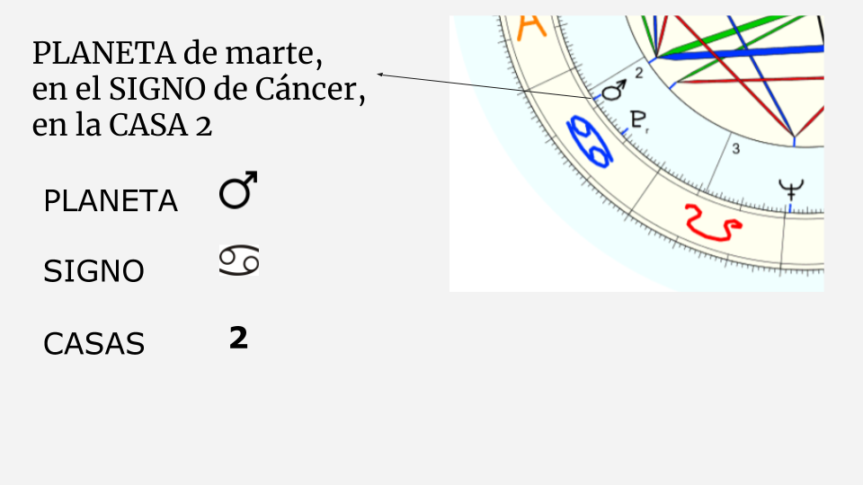

La astrología es un tema hermoso, pero como todo estudio tiene sus dificultades y sus propias reglas.
Acá te cuento cómo encarar la lectura de una carta astral.

Quien se enfrente por primera vez ante una carta astral, seguramente la vea como un círculo lleno de símbolos y líneas de colores que van por todos lados. Puede que te confunda ver tanta cosa, pero por más complicado o sin sentido que parezca, todo tiene un porqué.
Primero lo primero.Carta astral y carta natal ¡es lo mismo! Tanto la carta natal, como la carta astral, significan lo mismo. Es el mapa de como se encontraba el cielo en el momento exacto de tu nacimiento. Vendría a ser una foto de como estaban ubicados los planetas en ese momento preciso, una foto del sistema solar tomada al minuto de tu nacimiento, desde el punto de vista geográfico de donde nacimos. Este esquema nos acompaña toda la vida y es particular para cada uno. En este dibujo, que está representado por un círculo, podés ver en qué signos y en qué casas caen estos planetas.

A partir de ese mapa vamos extrayendo cualidades, potencialidades, desafíos y energías dominantes de cada persona. Conocer tu carta astral te permite ser más consciente y tomar más acción en tu vida.
Lo primero que necesitas para poder leer una carta astral, es calcularla. para obtener tu dibujo. Para esto tenes que saber tu fecha, hora, y lugar de nacimiento.Una vez que hagas tu carta, que sabemos que es la primera que vas a hacer, podés seguir con amigos, novios o familiares. Estos son los únicos datos que necesitas, pero tienen que ser exactos. Hay muchos sitios en internet que te permiten hacerlo. Te recomiendoastro.com o grupovenus.com. Ambos gratuitos. Acá podes cargar los datos y acceder a la carta.
Una carta astral tiene varios niveles de profundidad. Pero pongamos orden y empecemos a interpretar todos esos símbolos que aparecen.
Hay tres elementos fundamentales que hacen al ABC de la astrología.Y estos son…. Los planetas, los signos y las casas.
Para la interpretación de la carta astral es importante saber relacionar los planetas, los signos y las casas. No es lo mismo tener el Sol en Cáncer que en Acuario. Ni tampoco tenerlo en la casa 3 o en la casa 8. Mi consejo es no tratar de interpretar todos los planetas en todos los signos y en todas las casas. Sino,que traten de encontrar lo relevante, lo importante y singular de la carta. Podés empezar tratando de ver cual es el elemento predominante, o si hay alguno que escasea. Recordá que a todos los signos se le atribuye uno de los cuatro elementos (Fuego, aire, tierra y agua). Otra opción es empezar interpretando a grandes rasgos el carácter de la persona, tomando las posiciones de su Sol (esencia), Luna (hábito y reacción) y Ascendente (apariencia e identidad). Interpretar una carta astral no es tarea fácil. No es todo de manual. No solo por la profundidad de detalles que tiene, sino también porque no hay solo una forma de ver las cosas, ni de llevar las energías. Hay muchos factores a tener en cuenta y nuestra carta está llena de matices. No te desanimes si te cuesta al empezar. Recordá que la práctica hace al maestro.¡Ánimo y divertite!
Si queres empezar a estudiar astrología, te dejo un curso ideal para arrancar y entender bien e incorporar todos los conceptos claves. ¡La primera clase es gratuita!